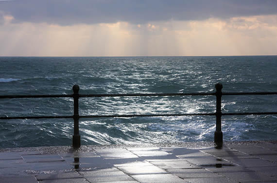

Penzance Promenade and Seafront
Penzance Promenade stretches the seafront between the Jubilee Pool at the Eastern end and Newlyn to the West. With views spanning Mounts Bay it's the idyllic place to take a stroll on a sunny summers day.
The Promenade was constructed in stages during the 1800's with the Western end finished in 1893.
During it's life the prom has played an integral part of leisure time in Penzance. The seafront was the centre of nightlife with the Winter Gardens and the Queens Taverns being the hottest nights out in their time.
In 1905 a new bandstand was built on the Promenade opposite the Queen's Hotel, and the Pavilion Theatre opened nearby in 1911, complete with a roof garden and cafe. The theatre has since become an arcade and restaurant.
Today, the seafront has two children's play parks, basket ball courts, a bowling green, an arcade and a smattering of restaurants and cafes.

Copyrights - Promenade_02 - www.fotodiscs4u.co.uk| Promenade_01 - Bob Jones